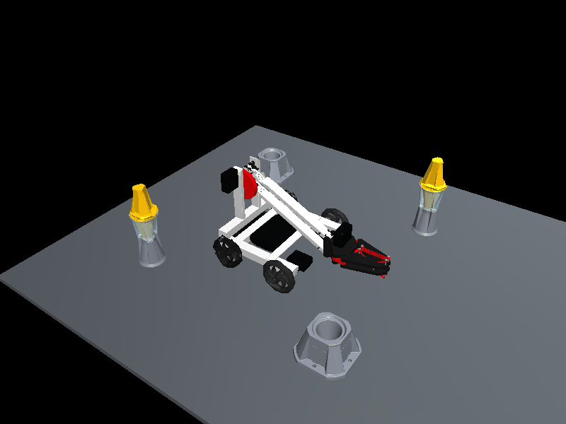
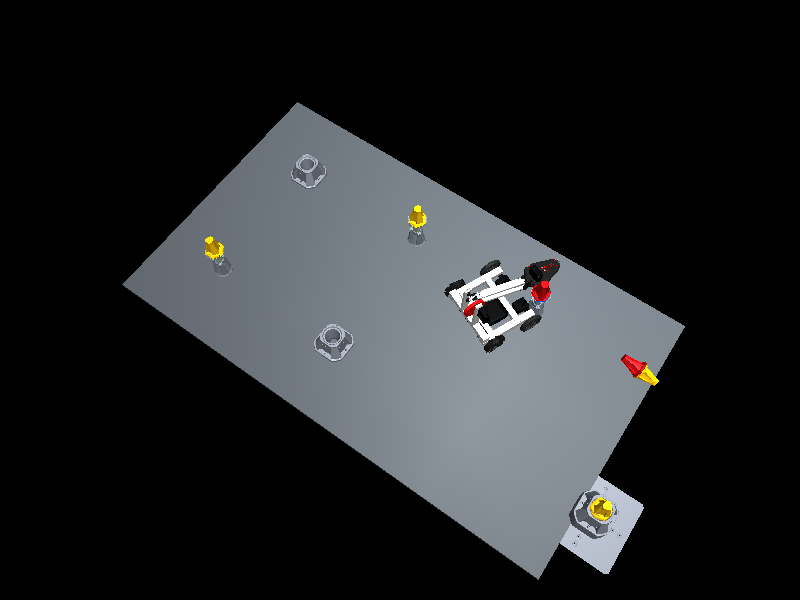

Physical wheel actuation; handwritten test program. Arm, claw and field objects fixed.

{
"duration_s": 10.000000000000009,
"total_mass_kg": 2.8300000000000005,
"finite": true,
"straight_displacement_m": 0.7337402866539253,
"turn_heading_change_deg": 98.8374444659681,
"total_displacement_m": 0.7918082891148891,
"max_tilt_deg": 0.7926167174901707,
"obstacle_contact_episodes": 1,
"collision_episode_clearance_s": 0.2,
"saturation_fraction": 0.0002,
"wheel_travel_m": {
"wheel_i00010": 1.4058658440452956,
"wheel_i00013": 1.2387617648875227,
"wheel_i00021": 1.2881014286439096,
"wheel_i00024": 1.4898866025139124
},
"final_position_m": [
-0.1498509571734593,
-0.6975665492501685,
0.05190448593440361
],
"root_forces_used": false,
"protocol": "fixed drive/brake/turn; not an Override scoring benchmark"
}CAD is visual geometry; collision proxies use convex hulls of larger field parts. Field game objects and Toggles are fixed in this driving experiment; goal/cup openings are not usable for scoring. Arm and claw are locked at their supplied pose. Fasteners are rigid attachments; STEP supplies no verified mates. Two driven traction wheels, two passive omni wheels. Omni lateral behavior approximated with low isotropic friction, not individual rollers. Masses: frame/electronics 1.35 kg, battery .35 kg, fixed arm/claw .65 kg, each wheel .12 kg. These are estimates, not verified CAD mass properties. Motor approximation: .5 Nm stall, 200 rpm no-load, linear torque-speed envelope; model is not a calibrated V5 motor. No AI proposals or API calls in this CAD import/driving demonstration.
